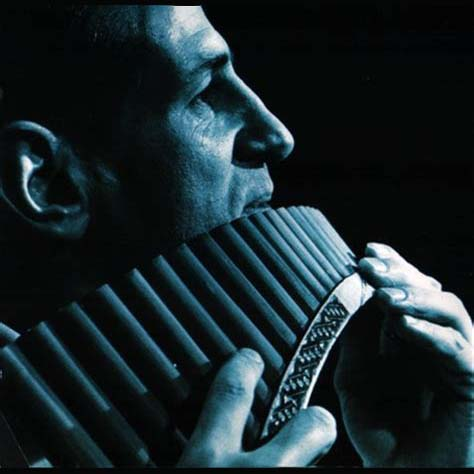

My favorite music
-
"Chi Mai" (Italian: whoever) is a composition by Ennio Morricone
written in 1971. It was first used in the film Maddalena (1971),
later in the films Le Professionnel directed by Georges Lautner
(1981), as well as in the television series An Englishman's Castle
(1978). Click here to see more
information
-
"The
Lonely
Shepherd", also known as Einsamer Hirte or Der einsame Hirte in
German or as El pastor solitario in Spanish, is an instrumental
piece by James Last, first released in a recording with the Romanian
panflutist Gheorghe Zamfir.
"The Lonely Shepherd" has
repeatedly been used as a soundtrack. In 1979, it was used as the
title theme for the six-part television series Golden Soak (Das Gold
der Wüste). In 1983 it was used as the love theme of a Venezuelan
series called Chao, Cristina produced by the Venezuelan TV network
RCTV and again in 1984 in the Oscar-nominated animated short film
Paradise. In 2003, Quentin Tarantino used the recording as
soundtrack in a scene and in the closing credits of his film Kill
Bill: Volume 1. On the DVD, Gheorghe Zamfir is mistakenly credited
as the title's producer.
Click here to see more
information